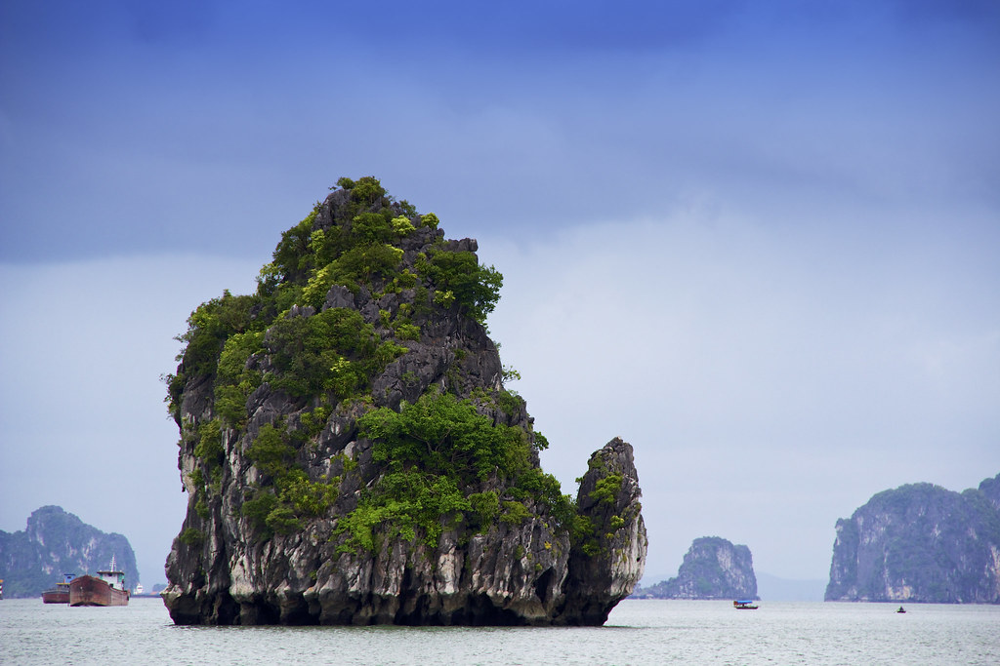

Ha Long Bay is a UNESCO world heritage site and a popular tourist destination in northeast Vietnam. The bay is famous for its crystal clear emerald colored waters dotted with limestone mountains that rise up from the water. Many tourists visit and take boat tours around the islands that tend to me named after their peculiar shape. For instance, tourists can take kayak expeditions around the Teapot islets, a set of islands shaped like teapots, or be rowed around Stone Dog, which appears to be shaped like a dog.
The Ha Long Bay region is popular for scuba diving, rock climbing and hiking, particularly in mountainous Cát Bà National Park. The nearest city is Hai Phong, which is approximately 75 km away. It is easier to reach Ha Long Bay by boat because the journey from Hai Phong to Ha Long Bay can take nearly 2.5 hours.
Photo Gallery
A traditional Vietnamese sailboat sails along the Ha Long Bay. Boat tours like this one have become incredibly popular with tourists traveling to Vietnam.
Many tourists choose to rent kayaks and explore the bay on their own instead of joining a formal tour. This gives them the flexibility to explore the 1,600 islands that dot the bay on their own!
Scuba diving gives tourists the opportunity to see the bay from a very different perspective. Scuba diving allows tourists to experience the 50 species of Mollusc and over 200 unique types of fish Ha Long Bay has to offer!

Many of the 1,600 islands that dot the bay have been named for there unique shape. In fact, the series of islands that are pictured here have been dubbed the teapot islets because they resemble a teapot!
Some of the larger islands that dot Ha Long Bay actually house massive caves that are open to the public. This is an image of Sung Sot, which is the largest cave in the bay!